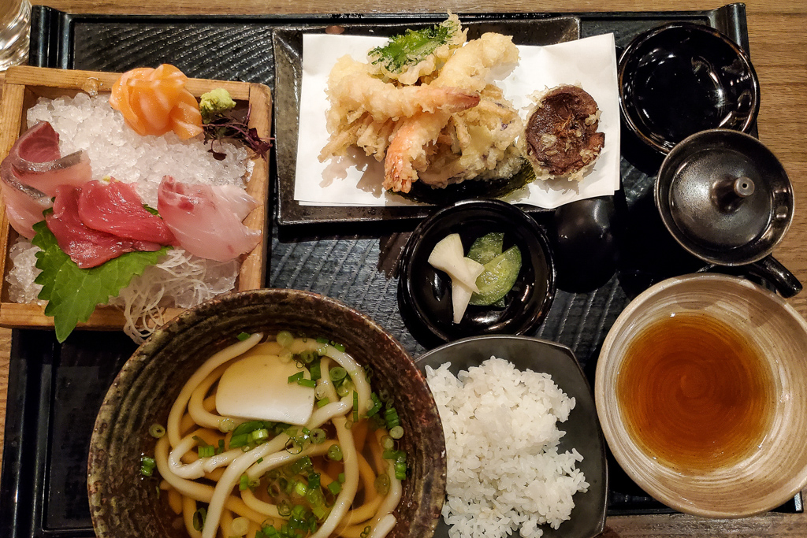
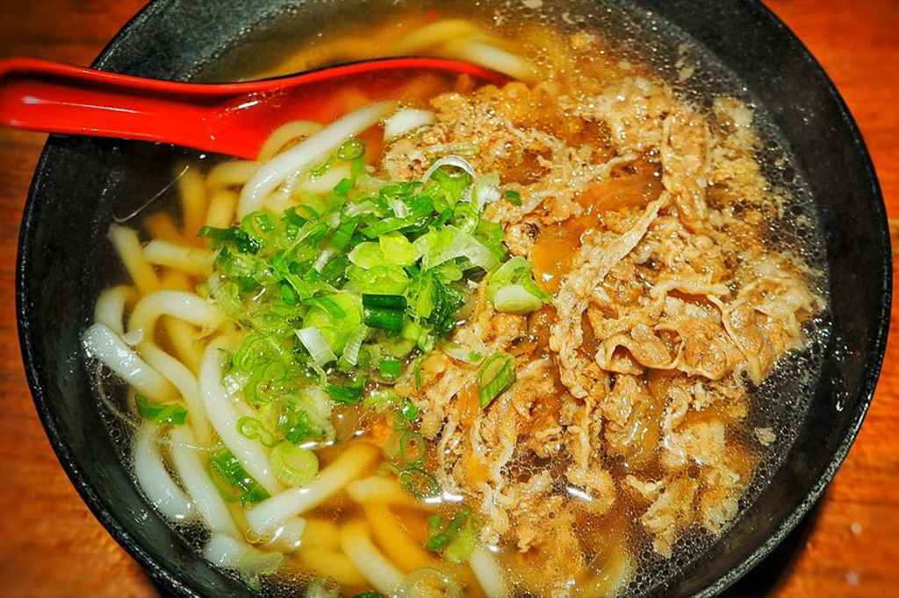
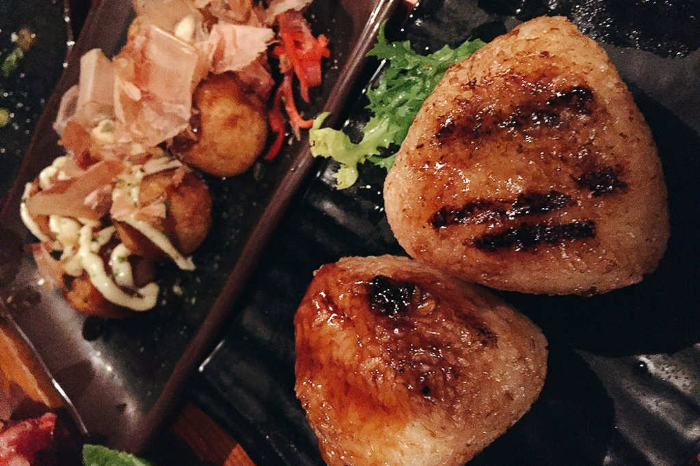

Top 10 Japanese Restaurants in NYC
Nov 1 - Written by Bonnie and Emily
As if New York City wasn’t a vast jungle already, you’d be surprised to know that the plentiful number of Japanese restaurants in the city means that you can eat something different every day.
In the few years we’ve lived in NYC, Japanese cuisine was a staple in our day to day diet-- which meant that trying a ton of different Japanese restaurants was a given until we found a few of our favorite ones that we wanted to share with you all. It may not be as mind-blowing as some of the foods we’ve had during our trip to Japan a few years back, but it's definitely the next best thing we’ve tasted outside the country.
Best Sushi a la Carte Deal
Kazu Nori - The Original Hand Roll Bar - 15 W 28th St, New York, NY 10001
Kazu Nori is the best place for handrolls as the name suggests, but what really makes it delicious is their ability to take the simplest ingredients, rice, seaweed, sashimi and make the taste of their raw fish the star of the show. Their process is simple, you grab a paper menu and pencil from the front and you select what you want either while waiting in line for a table or when you’ve been seated. For the best bang for your buck, we recommend choosing from the set menu for the opportunity to taste a variety of seafoods while saving a few dollars compared to ordering a la carte. Some of our favorites we suggest you try out have been the Bay Scallop Hand Roll and the Toro Hand Roll. If you’re feeling simplicity and looking to spend a little more for some high quality fish, definitely check out Kazu Nori in the Flatiron District.
Best Japanese Set Meals

Aoi Kitchen - 320 E 6th St, New York, NY 10003
Tucked away in an East Village basement lies Aoi Kitchen, one of the best spots to grab a Japanese set meal. All their sets include an assortment of their daily sides, miso soup, and their dessert of the day that are laid out in delightful mini dishes that are too cute to eat. You really can’t go wrong with any of their sets but the Omurice set and Tonkatsu set have been some of our constant favorites. We’ve raved a lot about their set meals but we can’t forget about their exceptional sandos that are perfect for lunch or a quick snack to share with a friend.
Best Udon
Raku - 342 E 6th St, New York, NY 10003
Raku is a small place in the East Village that can often be unnoticed by people walking by if it weren’t for the typical groups of people that are waiting on the sidewalk outside the restaurant. It's the perfect place on a rainy day to grab a simple but heart warming bowl of udon. Their udons are fairly simple and often only come with one topping, but you can always jazz it up with any additional toppings for a few extra dollars. If you’re ever feeling like trying something different than your typical udon, their kani ankake is a good choice, the thick egg soup makes the whole meal even more filling and definitely warms you up on a cold NYC day.

Tsurutontan - 21E E 16th St, New York, NY 10003
Tsurutontan is another great place to grab udon on a cold day and have multiple locations throughout the city. Initially grown famous for their extra large bowls of udon, their udon in normal sized bowls are just as yummy. Tsurutontan is one of the few udon restaurants with a large variety of udon dishes on their menu including both hot and cold. They also have unconventional udon dishes such as curry udon and great set meal bargains during lunch hours.
Best Soba
Sobaya - 229 E 9th St, New York, NY 10003
Sobaya is one of our most favorite Japanese restaurants to hit up in the East Village perfect for any type of weather. Their traditional Japanese ambience transports you to a new place with the addition of delicious freshly made soba. Their springy cold soba noodles are a great choice for a refreshing meal on a hot summer's day. While their hot soupy soba noodles are perfect for the winter season. For some great deals to fill up your tummy, you can also head over to Sobaya during lunch time to check out their lunch menu. They have a variety of lunch sets including their Lunch Bento box that's a great price value deal made only at a limited quantity per day.
Best Omakase Deal
Sushi Katsuei - 210 7th Ave, Brooklyn, NY 11215
Sushi Katsuei is one of few omakase restaurants that really gives you the best value sushi experience on a budget. Omakases can be a highly priced restaurant experience but also an extremely memorable dining experience. Sushi Katsuei provides the best of both worlds where you’re able to try the omakase experience without breaking the bank. They have multiple options available including the sashimi and sushi combo meal that provides you with the largest range of fish and sushi methods. Their nigiri and sashimi are typically made with the daily choice of fish that makes its way to the restaurant. If you’re open to making your way over to Brooklyn, you can also try their omakase meals for a slightly cheaper price than their West Village location!
Best Donburi/Gyudon
Benemon - 108 E 4th St, New York, NY 10003
As rice lovers, of course we had to include an optimal place to try Dons, rice bowls! Benemon is located in the East Village, and is one of the best spots to grab a drink, eat a snack, and feast on one of their delicious rice bowls from their large menu. Rice bowls may sound simple, but their delicate mix of meat, vegetables, and sauce comes together perfectly on top of a steaming bowl of rice to make their great mix of Dons. One of our favorite rice bowls is their Shrimp and Anago Ten Don, a mix of different tempuras including shrimp and eel, that is freshly fried to give you a crunchy delight.

Best Cheap Eats
Go! Go! Curry! - multiple locations
As college students that were often eating on a budget, Gogo Curry was a staple in our budget cheap eats on a daily basis. It's one of the best quick and cheap ways to get your curry fix and have money left over for bubble tea! Their crunchy tonkatsu and richly flavored curry is the perfect combination to fill your stomach and bring a smile to your face. Gogo Curry has a few curry meal sets on their menu already, including the “Homerun Meal” which has one of every item in their menu if you’re ever feeling adventurous (or just very hungry). Of course you can also always create your own curry meal and add any toppings that you’d like. Gogo Curry has locations scattered around the city for you to grab a quick bite whenever and wherever you are!

Udon West - 11 St Marks Pl, New York, NY 10003
If you’re ever on a budget and craving udon, Udon West is the place for you. A small bar-like restaurant on Astor Place, Udon West has a large option of udon bowls and appetizers for a low price. One of our favorite options is their Tempura Udon-- pro tip, if you are getting tempura, we suggest asking for it on the side to maintain its crunch throughout your meal. Udon West is one of our go to places on a chilly day or for a late evening meal. Since their restaurant space is so limited, we suggest taking a small group here, and don’t forget to bring cash as their restaurant has a cash only policy.

Kenka - 25 St Marks Pl, New York, NY 10003
If you’re ever looking for a whole new experience of a Japanese restaurant and cuisine, definitely check out Kenka on Astor Place. From their unique decor to their delicious tapas and beer, Kenka is a must visit -- not to mention how budget friendly their menu is! They offer a large offering of appetizers, snacks, and meals that pair wonderfully with one of their beer towers or cocktails. Some of our favorites to order from the menu include okonomiyaki and takoyaki -- we also can’t forget the fluffy DIY cotton candy they provide you at the end of your meal. Since Kenka is so popular and opens later in the day, definitely try to arrive a little earlier to beat the crowd!